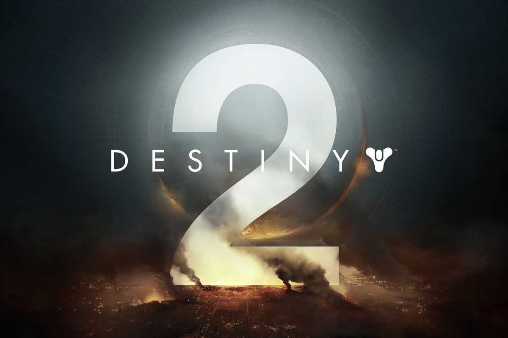
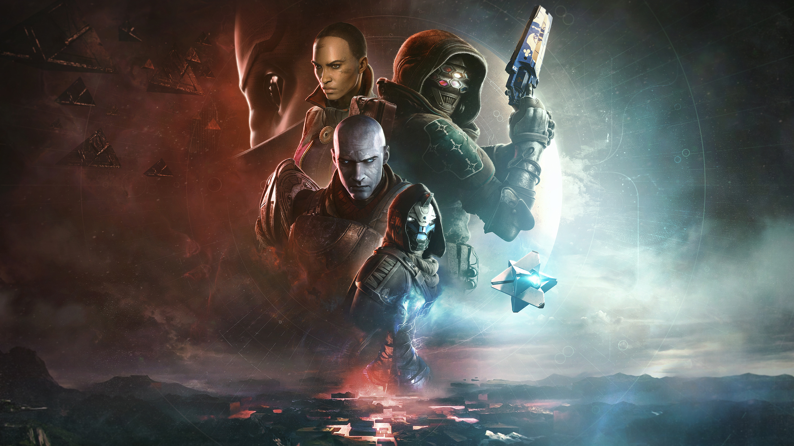

About Destiny 2
Destiny 2 is a popular online multiplayer first-person shooter developed by Bungie. Released as the sequel to the
original Destiny game, Destiny 2 continues the epic, cinematic storytelling and thrilling gameplay experience set in
a mythic science fiction world.

Key Features
- Engaging Storyline: Immerse yourself in a rich narrative as a Guardian, defending the Last City on Earth.
- Multiplayer Modes: Experience various cooperative and competitive multiplayer modes with friends and other players.
- Open-World Exploration: Explore diverse planets and landscapes, each with its own unique challenges and activities.
- Powerful Gear: Earn and collect a wide range of powerful weapons and armor to enhance your Guardian's abilities.
- Regular Updates: Bungie releases regular updates, expansions, and events to keep the game fresh and exciting.

Community
Destiny 2 has a vibrant and passionate community of players. Join forums, social media groups, and in-game clans to
connect with other Guardians, share experiences, and stay updated on the latest news and strategies.